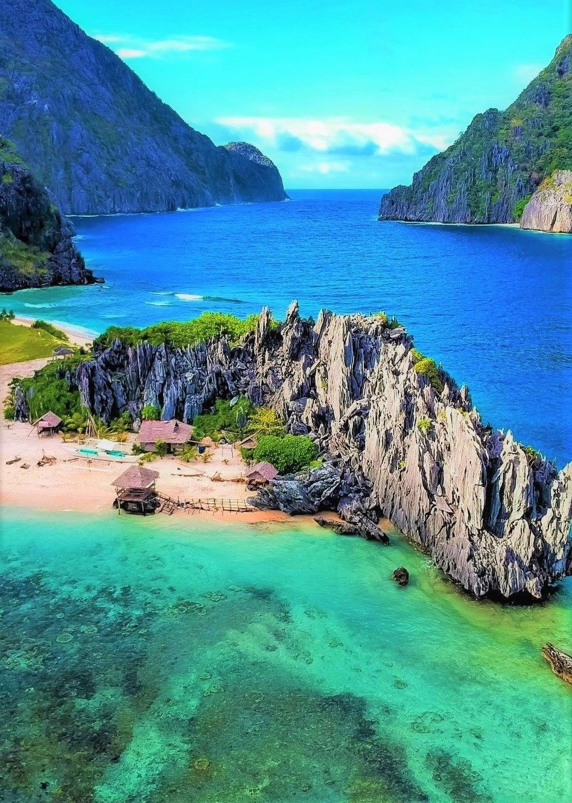

ABOUT PALAWAN
Palawan Island is one of the most breathtaking destinations in the Philippines and has earned its title as the country’s “Last Frontier.” Located in Western Philippines, this long, narrow island is world-famous for its unspoiled beaches, dramatic limestone cliffs, turquoise lagoons, and diverse marine life. Whether you’re into snorkeling, diving, island hopping, or nature adventures, Palawan Island tours offer an incredible variety of experiences.
From the bustling city of Puerto Princesa to the tropical charm of El Nido town, the historic shipwrecks of Coron town, the serene coastlines of San Vicente town, and the untouched shores of Balabac Island, Palawan showcases some of the best attractions that the Philippines has to offer.